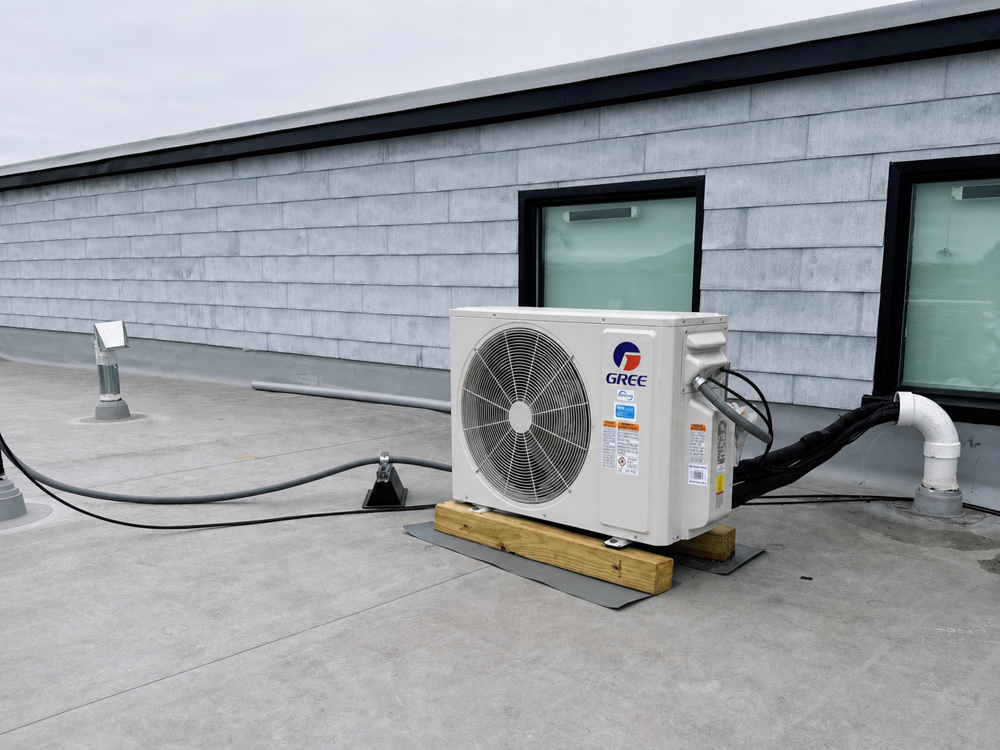

Water Leaking From the Indoor Unit
We diagnose clogged drain lines, improperly seated hoses, loose drain pans, and drain lines without enough slope.
Targeted Heating & Cooling
Mini splits work where ductwork does not, or when you want one room on its own thermostat.
Discuss Your SpaceCall NowInstallation and service experience
John Calhoun Electric & HVAC installs, replaces, repairs, and services ductless mini split systems for homeowners throughout Roanoke, VA and nearby communities.
Our team works on wall-mounted mini splits, cassette units, and multi-zone systems. We also see what goes wrong with them. Bad drainage, low refrigerant, dead motors, and previous installs.
That hands-on experience helps us install and service these systems correctly.
A practical option
A mini split heats and cools one room without any ductwork. For some Roanoke homes, that makes them a practical way to add comfort without major changes to the house.
Choosing a configuration
A single-zone mini split connects one indoor unit to one outdoor unit. This is often a good choice for one room, addition, garage, or separate space.
Multi-zone systems run several indoor units off one outdoor condenser. Our work includes standard wall-mounted systems and multi-zone cassette equipment.
Multi-zone systems must be designed and operated correctly. Indoor units sharing one outdoor system generally cannot provide heating and cooling at the same time. Understanding how the system will be used is an important part of choosing the right setup. For multi-unit and business applications, see our commercial HVAC services in Roanoke.

Details matter
A good installation involves more than hanging an indoor unit on the wall. The system needs proper refrigerant connections, electrical service, drainage, insulation, and placement of both indoor and outdoor equipment.
A drain hose that is not fully seated leaks inside the wall. A drain line without enough slope backs up. Refrigerant lines that are not insulated right sweat and cause water damage. We have repaired each of these problems in existing systems, and that experience helps us focus on the details during installation.
For a broader comparison with central cooling equipment, explore our AC installation and replacement options.
Troubleshooting and repair
We diagnose clogged drain lines, improperly seated hoses, loose drain pans, and drain lines without enough slope.
We check cooling performance and look for leaks in indoor coils, fittings, and other parts of the system when refrigerant is low.
We troubleshoot motor-related error codes and failed motors, including related damage to control-board connections.
We diagnose error codes involving motors, control boards, sensors, and communication between system components.
We repair systems where old or damaged line insulation allows condensation to form and leak into the home.
If your ductless system is already showing symptoms, our diagnostic approach follows the same principles used for AC repair in Roanoke: test the equipment, identify the cause, and explain the right repair.
Ductless comfort for Roanoke homes
A mini split is the answer for a room that never gets comfortable, an addition with no ductwork, or a space that needs its own controls.
We install both ductless and traditional systems, so we have no reason to push you toward one.
Discuss Your Options